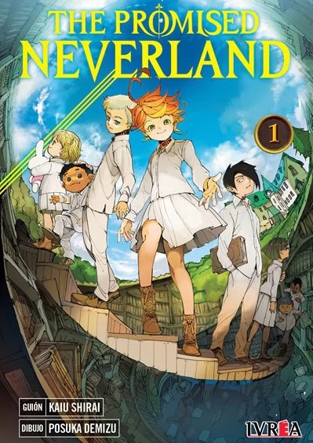

The Promised Neverland

Los niños del orfanato Grace Field House viven una vida feliz y pacífica gracias a los cuidados y el cariño que les brinda
Mamá, la única adulta del lugar. Ahí viven unos 40 niños y bebés que ella alimenta, educa, cuida como si fueran una gran
familia y prepara para la vida afuera del orfanato una vez que los adopten. Las únicas condiciones: seguir las reglas y
jamás de los jamases atravesar el muro que separa el enorme terreno del resto del mundo.
Emma, Norman y Ray son los tres más grandes, inteligentes y despiertos de los chicos que hay en el lugar, pero poco antes
de que les toque partir, descubren un espeluznante secreto sobre qué les espera una vez que crucen la puerta.
¿Qué son los abominables monstruos que los esperan del otro lado? ¿Por qué los educan y alimentan tan bien si su destino
es así de tremendo? ¿Habrá notado la maquiavélica Mamá que los chicos descubrieron la verdad? ¿Qué año es, en qué parte del
mundo están, de dónde vienen? y lo más importante: ¿Cómo podrán salir de ahí llevando a los hermanitos bebés y nenes que
no pueden valerse por sí mismos?